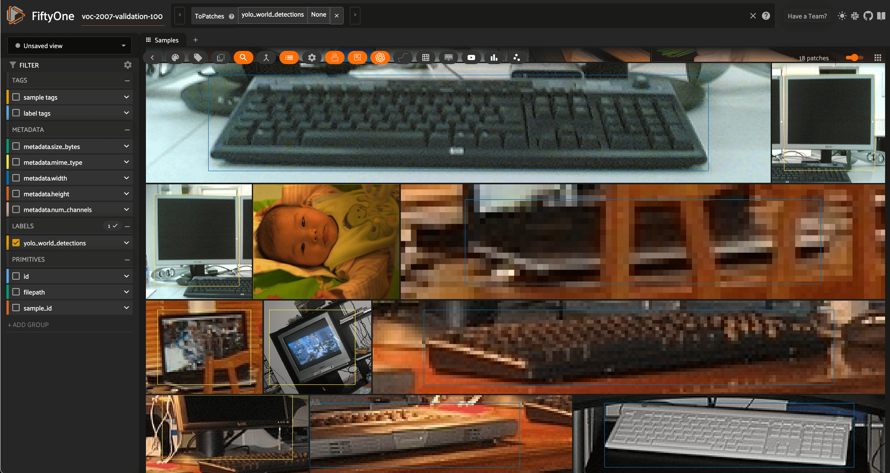

Ultralytics Integration ¶¶
FiftyOne integrates natively with Ultralytics, so you can load, fine-tune, and run inference with your favorite Ultralytics models on your FiftyOne datasets with just a few lines of code!
Setup ¶¶
To get started with Ultralytics, just install the following packages:
pip install "ultralytics>=8.1.0" "torch>=1.8"
Inference ¶¶
The examples below show how to run inference with various Ultralytics models on the following sample dataset:
# Suppress Ultralytics logging
import os; os.environ["YOLO_VERBOSE"] = "False"
import fiftyone as fo
import fiftyone.zoo as foz
import fiftyone.utils.ultralytics as fou
from ultralytics import YOLO
# Load an example dataset
dataset = foz.load_zoo_dataset("quickstart", max_samples=25)
dataset.select_fields().keep_fields()
Image classification ¶¶
You can directly pass Ultralytics YOLO classification models to
apply_model():
# YOLOv8
model = YOLO("yolov8n-cls.pt")
# model = YOLO("yolov8s-cls.pt")
# model = YOLO("yolov8m-cls.pt")
# model = YOLO("yolov8l-cls.pt")
# model = YOLO("yolov8x-cls.pt")
dataset.apply_model(model, label_field="classif")
session = fo.launch_app(dataset)
Object detection ¶¶
You can directly pass Ultralytics YOLO or RTDETR detection models to
apply_model():
# YOLOv8
model = YOLO("yolov8s.pt")
# model = YOLO("yolov8m.pt")
# model = YOLO("yolov8l.pt")
# model = YOLO("yolov8x.pt")
# YOLOv5
# model = YOLO("yolov5s.pt")
# model = YOLO("yolov5m.pt")
# model = YOLO("yolov5l.pt")
# model = YOLO("yolov5x.pt")
# YOLOv9
# model = YOLO("yolov9c.pt")
# model = YOLO("yolov9e.pt")
# YOLOv10
# model = YOLO("yolov10n.pt)
# model = YOLO("yolov10s.pt)
# model = YOLO("yolov10m.pt)
# model = YOLO("yolov10l.pt)
# model = YOLO("yolov10x.pt)
# YOLOv11
# model = YOLO("yolo11n.pt)
# model = YOLO("yolo11s.pt)
# model = YOLO("yolo11m.pt)
# model = YOLO("yolo11l.pt)
# model = YOLO("yolo11x.pt)
# RTDETR
# model = YOLO("rtdetr-l.pt")
# model = YOLO("rtdetr-x.pt")
dataset.apply_model(model, label_field="boxes")
session = fo.launch_app(dataset)
Alternatively, you can use the
to_detections() utility to
manually convert Ultralytics predictions to
FiftyOne format:
for sample in dataset.iter_samples(progress=True):
result = model(sample.filepath)[0]
sample["boxes"] = fou.to_detections(result)
sample.save()

You can also load any of these models directly from the FiftyOne Model Zoo:
model_name = "yolov5l-coco-torch"
# model_name = "yolov8m-coco-torch"
# model_name = "yolov9e-coco-torch"
# model_name = "yolov10s-coco-torch"
# model_name = "yolo11x-coco-torch"
# model_name = "rtdetr-l-coco-torch"
model = foz.load_zoo_model(
model_name,
label_field="boxes",
confidence_thresh=0.5,
iou_thresh=0.5,
)
dataset.apply_model(model)
session = fo.launch_app(dataset)
You can use list_zoo_models() to see all
available YOLO models that are compatible with Ultralytics or SuperGradients:
print(foz.list_zoo_models(tags="yolo"))
In general, YOLO model names will contain “yolov”, followed by the version number, then the model size (“n”, “s”, “m”, “l”, or “x”), and an indicator of the label classes (“coco” for MS COCO or “world” for open-world), followed by “torch”.
Instance segmentation ¶¶
You can directly pass Ultralytics YOLO segmentation models to
apply_model():
model = YOLO("yolov8s-seg.pt")
# model = YOLO("yolov8m-seg.pt")
# model = YOLO("yolov8l-seg.pt")
# model = YOLO("yolov8x-seg.pt")
# model = YOLO("yolo11s-seg.pt")
# model = YOLO("yolo11m-seg.pt")
# model = YOLO("yolo11l-seg.pt")
# model = YOLO("yolo11x-seg.pt")
dataset.apply_model(model, label_field="instances")
session = fo.launch_app(dataset)
Alternatively, you can use the
to_instances() and
to_polylines() utilities to
manually convert Ultralytics predictions into the desired
FiftyOne format:
for sample in dataset.iter_samples(progress=True):
result = model(sample.filepath)[0]
sample["detections"] = fou.to_detections(result)
sample["instances"] = fou.to_instances(result)
sample["polylines"] = fou.to_polylines(result)
sample.save()

You can also load YOLOv8, YOLOv9, and YOLO11 segmentation models from the FiftyOne Model Zoo:
model_name = "yolov8n-seg-coco-torch"
# model_name = "yolov8s-seg-coco-torch"
# model_name = "yolov8m-seg-coco-torch"
# model_name = "yolov8l-seg-coco-torch"
# model_name = "yolov8x-seg-coco-torch"
# model_name = "yolov9c-seg-coco-torch"
# model_name = "yolov9e-seg-coco-torch"
# model_name = "yolo11n-seg-coco-torch"
# model_name = "yolo11s-seg-coco-torch"
# model_name = "yolo11m-seg-coco-torch"
# model_name = "yolo11l-seg-coco-torch"
# model_name = "yolo11x-seg-coco-torch"
model = foz.load_zoo_model(model_name, label_field="yolo_seg")
dataset.apply_model(model)
session = fo.launch_app(dataset)
Keypoints ¶¶
You can directly pass Ultralytics YOLO pose models to
apply_model():
model = YOLO("yolov8s-pose.pt")
# model = YOLO("yolov8m-pose.pt")
# model = YOLO("yolov8l-pose.pt")
# model = YOLO("yolov8x-pose.pt")
dataset.apply_model(model, label_field="keypoints")
# Store the COCO-pose keypoint skeleton so the App can render it
dataset.default_skeleton = fo.KeypointSkeleton(
labels=[\
"nose", "left eye", "right eye", "left ear", "right ear",\
"left shoulder", "right shoulder", "left elbow", "right elbow",\
"left wrist", "right wrist", "left hip", "right hip",\
"left knee", "right knee", "left ankle", "right ankle",\
],
edges=[\
[11, 5, 3, 1, 0, 2, 4, 6, 12],\
[9, 7, 5, 6, 8, 10],\
[15, 13, 11, 12, 14, 16],\
],
)
session = fo.launch_app(dataset)
Alternatively, you can use the
to_keypoints() utility to
manually convert Ultralytics predictions to FiftyOne format:
for sample in dataset.iter_samples(progress=True):
result = model(sample.filepath)[0]
sample["keypoints"] = fou.to_keypoints(result)
sample.save()

Oriented bounding boxes ¶¶
You can directly pass Ultralytics YOLO oriented bounding box models to
apply_model():
model = YOLO("yolov8n-obb.pt")
# model = YOLO("yolov8s-obb.pt")
# model = YOLO("yolov8m-obb.pt")
# model = YOLO("yolov8l-obb.pt")
# model = YOLO("yolov8x-obb.pt")
dataset.apply_model(model, label_field="oriented_boxes")
session = fo.launch_app(dataset)
You can also load YOLOv8 oriented bounding box models from the FiftyOne Model Zoo:
model_name = "yolov8n-obb-dotav1-torch"
# model_name = "yolov8s-obb-dotav1-torch"
# model_name = "yolov8m-obb-dotav1-torch"
# model_name = "yolov8l-obb-dotav1-torch"
# model_name = "yolov8x-obb-dotav1-torch"
model = foz.load_zoo_model(model_name)
dataset.apply_model(model, label_field="oriented_boxes")
session = fo.launch_app(dataset)
Note
The oriented bounding box models are trained on the DOTA dataset, which consists of drone images with oriented bounding boxes. The models are trained to predict on bird’s eye view images, so applying them to regular images may not yield good results.
Open vocabulary detection ¶¶
FiftyOne’s Ultralytics integration also supports real-time open vocabulary object detection via YOLO World.
The usage syntax is the same as for regular object detection, with the caveat that you can set the classes that the model should detect:
import fiftyone as fo
import fiftyone.zoo as foz
from ultralytics import YOLO
## Load dataset
dataset = foz.load_zoo_dataset(
"voc-2007", split="validation", max_samples=100
)
dataset.select_fields().keep_fields()
## Load model
model = YOLO("yolov8l-world.pt")
# model = YOLO("yolov8s-world.pt")
# model = YOLO("yolov8m-world.pt")
# model = YOLO("yolov8x-world.pt")
## Set open vocabulary classes
model.set_classes(
["plant", "window", "keyboard", "human baby", "computer monitor"]
)
label_field = "yolo_world_detections"
## Apply model
dataset.apply_model(model, label_field=label_field)
## Visualize the detection patches
patches = dataset.to_patches(label_field)
session = fo.launch_app(patches)

You can also load these open-vocabulary models from the FiftyOne Model Zoo, optionally specifying the classes that the model should detect:
model_name = "yolov8l-world-torch"
# model_name = "yolov8m-world-torch"
# model_name = "yolov8x-world-torch"
model = foz.load_zoo_model(
model_name,
classes=["plant", "window", "keyboard", "human baby", "computer monitor"],
)
dataset.apply_model(model, label_field="yolo_world_detections")
session = fo.launch_app(dataset)
Batch inference ¶¶
When using
apply_model(),
you can request batch inference by passing the optional batch_size parameter:
dataset.apply_model(model, label_field="predictions", batch_size=16)
The manual inference loops can be also executed using batch inference via the pattern below:
from fiftyone.core.utils import iter_batches
filepaths = dataset.values("filepath")
batch_size = 16
predictions = []
for paths in iter_batches(filepaths, batch_size):
results = model(paths)
predictions.extend(fou.to_detections(results))
dataset.set_values("predictions", predictions)
Note
See this section for more information about performing batch updates to your FiftyOne datasets.
Training ¶¶
You can use FiftyOne’s builtin YOLOv5 exporter to export your FiftyOne datasets for use with Ultralytics models.
For example, the code below prepares a random subset of the Open Images v7 dataset for fine-tuning:
import fiftyone as fo
import fiftyone.utils.ultralytics as fou
import fiftyone.zoo as foz
# The path to export the dataset
EXPORT_DIR = "/tmp/oiv7-yolo"
# Prepare train split
train = foz.load_zoo_dataset(
"open-images-v7",
split="train",
label_types=["detections"],
max_samples=100,
)
# YOLO format requires a common classes list
classes = train.default_classes
train.export(
export_dir=EXPORT_DIR,
dataset_type=fo.types.YOLOv5Dataset,
label_field="ground_truth",
split="train",
classes=classes,
)
# Prepare validation split
validation = foz.load_zoo_dataset(
"open-images-v7",
split="validation",
label_types=["detections"],
max_samples=10,
)
validation.export(
export_dir=EXPORT_DIR,
dataset_type=fo.types.YOLOv5Dataset,
label_field="ground_truth",
split="val", # Ultralytics uses 'val'
classes=classes,
)
From here, training an Ultralytics model is as simple as passing the path to the dataset YAML file:
from ultralytics import YOLO
# The path to the `dataset.yaml` file we created above
YAML_FILE = "/tmp/oiv7-yolo/dataset.yaml"
# Load a model
model = YOLO("yolov8s.pt") # load a pretrained model
# model = YOLO("yolov8s.yaml") # build a model from scratch
# Train the model
model.train(data=YAML_FILE, epochs=3)
# Evaluate model on the validation set
metrics = model.val()
# Export the model
path = model.export(format="onnx")